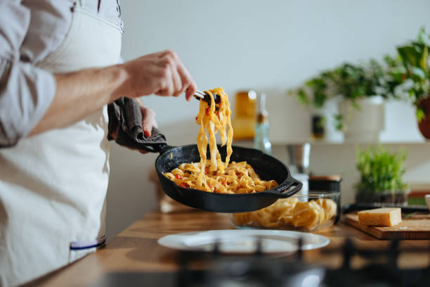
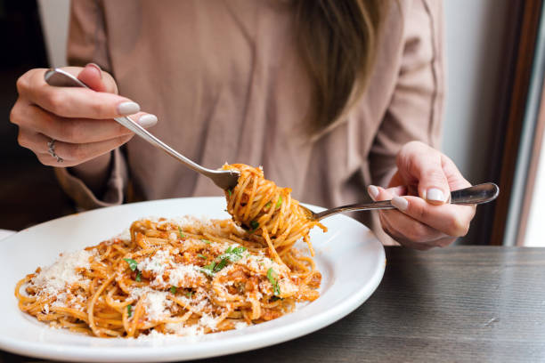

COMIDA FAVORITA
🍝
"Una buena comida es como un abrazo para el estómago y el alma"
Una buena pasta es un abrazo al paladar, mi comida favorita es todo tipo de pasta sin dudar el sabor y la explosión de cada uno de los ingredientes que le acompañan adicional agregando unos panitos tostados con mantequilla una exquisita delicia.
Adjunto encontraran imagenes de diferentas platillos que se pueden realizar con pastas
RECETA DE PASTA ALFREDO AQUI
 